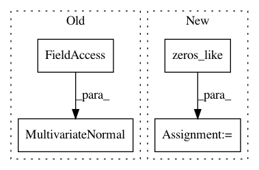

30ca6105f64f1cbbdb7f012bc848ed840e6f3682,gpytorch/models/exact_prediction_strategies.py,DefaultPredictionStrategy,exact_predictive_covar,#DefaultPredictionStrategy#Any#Any#,298
Before Change
).lazy_covariance_matrix.detach()
else:
train_train_covar = self.likelihood(
MultivariateNormal(torch.zeros(1), self.train_train_covar), self.train_inputs
).lazy_covariance_matrix
test_train_covar = delazify(test_train_covar)
After Change
return ZeroLazyTensor(*test_test_covar.size())
if settings.fast_pred_var.off():
dist = self.train_prior_dist.__class__(
torch.zeros_like(self.train_prior_dist.mean),
self.train_prior_dist.lazy_covariance_matrix,
)
if settings.detach_test_caches.on():
train_train_covar = self.likelihood(dist, self.train_inputs).lazy_covariance_matrix.detach()
else:
train_train_covar = self.likelihood(dist, self.train_inputs).lazy_covariance_matrix
In pattern: SUPERPATTERN
Frequency: 3
Non-data size: 4
Instances
Project Name: cornellius-gp/gpytorch
Commit Name: 30ca6105f64f1cbbdb7f012bc848ed840e6f3682
Time: 2019-04-12
Author: gpleiss@gmail.com
File Name: gpytorch/models/exact_prediction_strategies.py
Class Name: DefaultPredictionStrategy
Method Name: exact_predictive_covar
Project Name: cornellius-gp/gpytorch
Commit Name: 157041a86ecda19d43967fc3028d7b48fe17b243
Time: 2019-11-10
Author: gpleiss@gmail.com
File Name: gpytorch/variational/variational_strategy.py
Class Name: VariationalStrategy
Method Name: prior_distribution
Project Name: cornellius-gp/gpytorch
Commit Name: 76c081b840cd71b20d8ac8692b312ebef95eae75
Time: 2019-04-11
Author: gpleiss@gmail.com
File Name: gpytorch/models/exact_prediction_strategies.py
Class Name: DefaultPredictionStrategy
Method Name: exact_predictive_covar